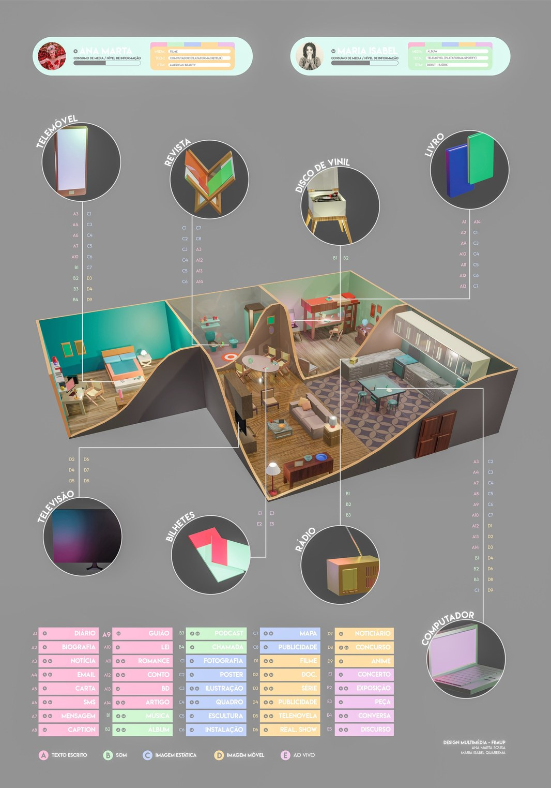
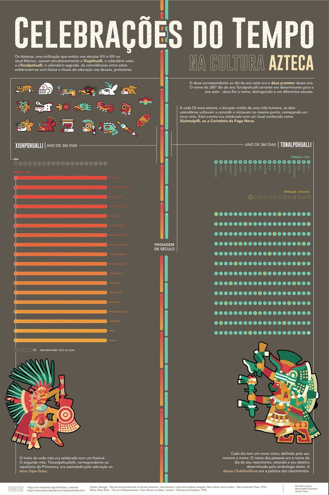

infographic posters
The data
The briefs asked us to simplify complex information, turning our personal media systems and an old calendar system into readable and digestible visual maps.
What I did
I took on the data design role, visually organising the source information and also setting layouts and type around it. Illustrations and 3D modelling were done by my project partners.


Illustrations and art direction by Sandro Vieira and Maria Isabel Quaresma.